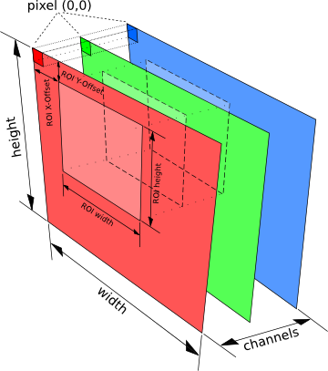

Basic Types for Image Processing¶
The Core modules provides basic types, classes and functions for image processing. In particular it introduces ICL’s image classes ImgBase and the derived templates Img, where its template parameter T defines the pixel data type.
Table of Contents¶
The Image Classes¶
For the implementation of the image classes, we combined inheritance and class-templates: The ImgBase class defines an abstract interface, that manages all image information except for the actual image pixel data. It works as generic interface for the several versions of the Img-template and provides access to
Note All provided setter functions for these parameters work in a lazy fashion. I.e. they will only actually do something if necessary The derived class Img adds a std::vector of typed data-pointers – one for each image channel. These channel data pointers use reference counting to allow for copying images shallowly. We provide extra tutorial chapters for the image classes: |
 |
Supported Image Types¶
The Img template class is not implemented in a completely inline fashion, which significantly improves the build-times for ICL and for other libraries, that depend on it. Furthermore, we preferred to provide a smaller set of possible image classes that is completely supported by our algorithms, rather than an infinite set. We chose to support images for pixel types
- icl8u (usually unsigned char)
- icl16s (usually short)
- icl32s (usually int)
- icl32f (float)
- icl64f (double)
defined in ICLUtils/BasicTypes.h, directly in the icl-namespace (see also Basic Types)
Each of these data types has it’s own advantages and disadvantages. The greatest disadvantage of the integer types, is their bounded range (e.g. 0-255 for icl8u), which has the effect, that all information has to be scaled to this range. Furthermore, all image processing functions must take care that no range-overflow occurs during calculation. The limited range may also cause loss of information – particularly in complex systems. However integer types can often be processed significantly faster, and the use of 8 or 16 bit integers leads to less memory usage in comparison to floats
Note
A nice rule of thumb is: If processing speed matters, use icl8u pixels whenever it’s possible and avoid Img64f because double processing is much slower on (still common) 32 bit machines (as long as you do not really need double precision)
For the supported types convenience typedefs are supported. Whenever one gets an ImgBase instance, it’s ImgBase::getDepth-method can be used to query it’s actual run-time type in oder to perform a type-safe down-cast. The core::depth enumeration provides alternatives for each of the supported image types.
| Full Type | typedef | depth-value |
|---|---|---|
| core::Img<icl8u> | core::Img8u | core::depth8u |
| core::Img<icl16s> | core::Img16s | core::depth16s |
| core::Img<icl32s> | core::Img32s | core::depth32s |
| core::Img<icl32f> | core::Img32f | core::depth32f |
| core::Img<icl64f> | core::Img64f | core::depth64f |
Here is a minimal example:
1 2 3 4 5 6 7 8 9 10 11 12 13 14 15 16 17 18 19 20 21 22 23 24 25 26 27 28 29 30 31 32 | #include <ICLCore/Img.h>
using namespace icl;
// dummy example function with generic ImgBase interface
void process_image(const core::ImgBase &image){
switch(image.getDepth()){
case core::depth8u:{
const core::Img8u &casted = *image.as8u();
// process 8u image
break;
}
case core::depth32f:{
const core::Img32f &casted = *image.as32f();
// process float image
break;
}
default:
throw utils::ICLException("unsupported depth!");
}
}
int main(){
core::Img8u a(utils::Size(512,512),core::formatRGB);
core::Img32f b(utils::Size::VGA,core::formatGray);
core::Img16s c;
process_image(a); // works
process_image(b); // works
process_image(c); // exception is thrown
}
|
Pixel Access¶
The ImgBase class provides only raw-data access (in shape of a void*); for type-safe pixel access, an ImgBase-instance must be casted into it’s actual Img-type. The different techniques for pixel-access are also discussed in the tutorial
Shallow Copy Concept¶
It is very important to know that ImgBase and Img-instances are copied shallowly. This means that, whenever an image is copied using either a the copy constructor or the assignment operator, the two images will share their image data pointers:
1 2 3 4 5 6 7 8 9 10 11 12 13 14 15 16 17 18 19 20 21 22 23 24 25 26 27 28 29 30 31 32 33 | #include <ICLCore/Img.h>
#include <ICLUtils/Random.h>
using namespace icl;
int main(){
// original image
core::Img8u a(utils::Size::VGA,1);
// shallowly copied instance
core::Img8u b = a;
// initialize c with deep copy of a
core::Img8u c = a.detached();
// fills b's pixel with random numbers
// note: a is also affected, but not c
b.fill(utils::URand(0,255));
// make b independent from a
b.detach();
// clears only b, a remains filled randomly
b.clear();
// another shallow copy
core::Img8u d = a;
// scaling d entails having to resize the
// internal data pointers; d becomes
// independent from a, a is not scaled
d.scale(utils::Size(100,100));
}
|
Data Origin¶
Just like most of the common image formats, we also defined the upper left image corner as data origin. Actually, many image operations, such as filtering or thresholding, do not even use this information at all. However, as soon as it comes to image visualization and annotation, the definition of the origin is crucial.
Channel-Concept¶
The Img class manages images as a stack of image slices – channels. Channels can be shared by multiple Img instances, which is especially important for fast shallow images copies (see also Shallow Copy Concept). Actually, it is possible to freely compose images from channels of different images. The composed image then shares it’s channel data with the original images, such that modifications will effect all images equally. In order to get an independent image a deep-copy as well as the ImgBase::detach-method are provided. The latter replaces the shared image channel(s) with new independent ones. Shared channel data are stored using the boost-like shared pointer class utils::SmartArray, which uses reference counting for autonomous garbage collection.
Regions of Interest (ROI)¶
Each image can be set up with a rectangular region of interest (short ROI). Most support this feature, i.e. they process only the pixels within the ROI. If a function does not support ROI handling, it’s documentation will announce this. Providing ROI support for custom algorithms, can be achieved in different ways. In general, we distinguish between native and non-native ROI support. If algorithms extract an images ROI before the actual processing takes place, we name this non-native support. Usually, this is slightly slower, then actually implementing an algorithms, that works directly on an image ROI. However, there are several pixel accessing techniques that provide implicit ROI handling (see tutorial).
Formats and Ranges¶
An ImgBase instance provides information about the (color) format (in shape of an core::format value), that is associated with the image data represented by the images channels. The word color was embraced as not all available formats imply color-information. The most commonly known color space is probably the RGB color space. If an ImgBase image has the core::format core::formatRGB
- the image has exactly 3 channels
- the first channel contains RED-Data in range [0,255]
- the second channel contains GREEN-Data in range [0,255]
- the third channel contains BLUE-Data in range [0,255]
Note
The range of all possible color format components is always assumed to be in range [0,255].
As soon as the channel count of the image is altered, it’s format will automatically be set to core::formatMatrix, which is used for unspecified color formats.
Deep Copies and Depth Conversion¶
Deep Copies
Images cannot only be copied shallowly, but also in a deep copy manner. In particular, if the source- and destination-image’s depth is not identical, the data types have to be converted deeply (i.e. pixel by pixel). Even though, the Img::detached method can be used for copying an image deeply, we strongly recommend to use image’s ImgBase::deepCopy methods, since in contrast to the Img::detached no temporary object needs to be created here. Actually there are two different versions of deepCopy:
- ImgBase::deepCopy(ImgBase **dst) (see ImgBase::deepCopy)
- Img<T>::deepCopy(Img<T> *dst) (see Img::deepCopy)
The ImgBase-method uses a pointer-pointer to be able to adapt the destination images depth if necessary (see also core::ensureCompatible, core::bpp and About the Use of ImgBase**s). For the Img-version, the destination image depth is restricted to the source depth by the function interface, which is why a normal pointer-interface is sufficient here. Both deep copy functions will always ensure, that the source and the destination image are equal in all it’s parameters.
Note
There are dedicated methods ImgBase::deepCopyROI that provide ROI support for deeply copying images. These will always use both, the source and the destination image ROI.
Depth Conversion
Converting an images depth is even simpler to understand than the deep-copy procedure, because there is just one version of core::ImgBase::convert. This method, will keep the destination image’s format, but adapt all other image parameters, such as size channel count and color format to the source image before converting the image pixels element-wise
Const-Concept¶
ICL images use the const concept of C++ to ensure the pixel data of const images (of type const ImgBase or more precisely const Img can not be altered/can only be accessed for reading. Unfortunately this leads to a conflict with our shallow-copy concept in the example:
void func(const Img8u &a){
Img8u b = a;
b.clear();
}
The originally const image a is shallowly copied to b, and clearing b does also clear a. Even though this could lead to really unexpected results, we decided to stick to this behavior since a fix would either entail to disable the shallow copy on default property, or deeply- and shallowly copied images would have to be represented by wrapper-classes, which would make the whole library much more difficult to understand.
Global Functions¶
The core package provides a set of global support functions, that can be split into functions for
- Color Formats and Color Conversion
- Image Class Support Functions
- OpenCV Image Conversion Functions
- Image Statistic Functions
- 2D Convex Hull Functions
Image Class Support Functions¶
Can be use to efficiently transform externally acquire interleaved pixel data into an ICL image. This function works very fast, in particular in case of having Intel IPP support.
Just the other way around: this function can be used to transform the planar ICL image data into an externally needed interleaved data layout
This function is provided in many different versions. It can be used as factory functions for creating correct core::Img-instances from given core::depth values
This set of functions are even more complex then the imgNew function. A specific issue of ICL image class structure is, that we use an is-a relation between the interface class core::ImgBase and the actual image instances core::Img. Whenever we face a situation, where we already have an existing ImgBase-instance (that obviously has a fixed core::depth), but we need an ImgBase instance of a different depth, we have to do the following. Our only options is to allocate a new Img where T is the desired type, and to replace the old instance with the new one (e.g. the old-one has to be deleted). In order to tell the caller-scope that an image was actually re-allocated, functions need to provide an ImgBase**-interaface. This is also discussed more in detail in the tutorial chapter About the Use of ImgBase**s.
This global function is strongly correlated to the ImgBase**-issue stated with the explanation of core::ensureCompatible. Many ICL operators, in particular all filters in the ICLFilter package, provide an ImgBase**-interface to allow filters to even adapt the core::depth of given destination images. In a few situation, we know however the correct depth however in advance. Here, the bpp-function (which is abbreviation for ImgBase-pointer-pointer can be used, to avoid having to allocate a temporary object
2D Convex Hull Functions¶
The header file ConvexHull.h provides two easy to use functions core::convexHull that compute the convex hull of a given set of either Point32f or Point instances
OpenCV Image Conversion Functions¶
The ICLCore module also provides a set of compatibility functions for converting ICL images into OpenCV’s cv::Mat type and vice versa.
- core::ipl_to_img
- core::img_to_ipl
- core::img_to_cvmat
- core::img_to_ipl_shallow (for shallow copies)
- core::img_to_cvmat_shallow (for shallow copies)
Image Statistic Functions¶
core::hist and core::channelHisto
creates an image histogram with a user defined number of bins for a single or all channels of an image. Please note that ICL’s default image displaying GUI component is also able to show the histogram of the currently shown image
computes the mean value for one or all given channels of an image
computes the variance for one or all given channels of an image
computes the standard deviation for one or all given channels of an image. Here, two versions, one with given mean-values and one that uses an empiric mean are provided.
computes mean and standard deviation at once
Color Formats and Color Conversion¶
Table of Contents¶
- Creating LUT-Acceleration
- Color Ranges
- Special Video Coding Color Formats
- sRGB (Most Common and Default)
- YUV Space Color Conversion
- HLS Color Space Conversion
- Lab Color Space Conversion
- Gray Scale Conversion
- r-g-Chromaticity Color Space Conversion
- formatMatrix Conversion
- Benchmarks
By now, ICL supports 7 different color formats. For each of these formats, an core::format value is provided.
| core::format | meaning |
|---|---|
| core::formatRGB | sRGB color format |
| core::formatHLS | Hue Lightness Intensity |
| core::formatYUV | Luminance Y and Chrominance U/V |
| core::formatChroma | R/G-Chromaticity space |
| core::formatLAB | CIE-L*a*b* space |
| core::formatGray | simple gray scale |
| core::formatMatrix | unspecified color format |
The main function for color format conversion is core::cc. core::cc uses the source and the destination format to pick the desired format conversion function internally. If the roiOnly-flag given to core::cc function is set to true, the source image’s ROI is converted into the destination image’s ROI. In this case, the destination image is not adapted to the source image. Instead, a single test is performed to ensure, that the source image’s ROI has the same size as the destination image’s ROI. If the test fails, an error occurs and the function returns immediately.
Note
Internally all functions are optimized for running without ROI support (in this case, the images data arrays are 1D). Thus, the ROI-Support mode (roiOnly = true) runs approx. 20% (2%-50%) slower depended on the specific source and destination format.
The core::cc function uses Intel IPP to speed up the conversion performance for the conversions
- RGB -> YUV
- YUV -> RGB
- RGB -> HLS
- HLS -> RGB
Creating LUT-Acceleration¶
All color conversion methods can be statically performed using a global lookup table for the color conversion. This is done by calling core::createLUT with the to-be-accelerated source and destination format. We do not recommend to use this features because it usually makes the color conversion significantly slower
Color Ranges¶
As a default, all ICL color spaces are represented in the full range of [0,255] in all depths. By these means, we get the advantage of being able to treat all color images in the same way. The disadvantage is, that already existing color conversion routines needed to be adapted to scale each color component to that range automatically.
Special Video Coding Color Formats¶
In video coding, usually certain YUV sub-formats are used, that use different horizontal and vertical resolutions for the Y and the U/V channels. Even though these format provide an objectively loss-less reduction of the image data size, they are, due to the more complex data layout, not appropriate for digital image processing. For a very few of these YUV sub-formats, ICL provides efficient conversion routines, however these must usually not be used manually because the image acquisition framework provides implicitly converted ICL-images directly. A more general tool for video-color format conversion is provided by the io::ColorFormatDecoder (see The ColorFormatDecoder)
sRGB (Most Common and Default)¶
Obviously, the RGB Color Model (or its absolute Version sRGB -> standard RGB) is the most commonly known color space. Even though many computer vision approaches use other color spaces, such as HLS or LAB, the sRGB color space defines a an anchor for most other color conversion functions. So in most cases, the sRGB format defines a bridge format for conversion from one to another format:
- X -> Y
- X -> RGB
- RGB -> Y
Another bridge color space (XYZ) is not considered here, because it usually not used in digital image processing. For ICL’s color conversion functions we can say:
- Converting from or to RGB is fast
- other conversion may be much slower.
- In particular the L*a*b* space is supported only very slowly
YUV Space Color Conversion¶
The literature for the YUV color model conversion is a bit confusing and far away from a kind of pseudocode, that can easily be converted to fast C++ code. The YUV Color model divides an incoming RGB signal into its luminance component (Y) and two chrominance components (U and V). The common YUV-color holds Y in the range [0,1], u in range [-0.436,0.436] and v in range [-0.615,0,615]. Hence ICL’s color conversion functions are adapted to scale the resulting values to the range [0,255] in all channels. Outgoing from the basic equation for converting rgb to yuv and back:
Y = 0.299*R + 0.587*G + 0.114*B
U = -0.147*R - 0.289*G + 0.436*B = 0.492*(B- Y)
V = 0.615*R - 0.515*G - 0.100*B = 0.877*(R- Y)
R = Y + 1.140*V
G = Y - 0.394*U - 0.581*V
B = Y + 2.032*U
The formulas are adapted for using ranges [0,255]:
Y = (0.299*R + 0.587*G + 0.114*B);
U = 0.56433408*(B-Y) + 127.5;
V = 0.71326676*(R-Y) + 127.5;
R = Y + 290.7 * v2;
G = Y - 100.47 * u2 - 148.155 * v2; with: u2 = 0.0034196078*U - 0.436;
B = Y + 518.16 * u2; and v2 = 0.0048235294*V - 0.615;
To avoid expensive floating point operations, the conversions can be optimized by creating a so called fixed point approximation of the above code:
Y = ( 1254097*R + 2462056*G + 478151*B ) >> 22;
U = ( 2366989*(B-Y) + 534773760 ) >> 22;
V = ( 2991658*(R-Y) + 534773760 ) >> 22;
R = Y + ( ( 290 * V2 ) >> 22 );
G = Y - ( ( 100 * U2 + 148 * V2) >> 22 ); with: U2 = 14343*U - 1828717;
B = Y + ( ( 518 * U2 ) >> 22 ); and V2 = 20231*v - 2579497;
This approximation produces errors less 3/255, and runs up to 20% faster. A further optimization can be implemented using lookup tables.
IPP Compatibility
In order to achieve compatibility with the yuv color conversion provided by intel IPP (which is used if IPP is available), also ICL’s color conversion methods were slightly adapted. We again used fixed point approximations for the algorithms described in the IPP manual:
rgb-to-yuv: y = ( 1254097*r + 2462056*g + 478151*b ) >> 22; u = (2063598*(b-y) >> 22) + 128; v = (3678405*(r-y) >> 22) + 128; if(v<0) v=0; else if(v > 255) v = 255; yuv-to-rgb: icl32s u2 = u-128; icl32s v2 = v-128; icl32s y2 = y<<22; r = (y2 + 4781506 * v2 ) >> 22; g = (y2 - 1652556 * u2 - 2436891 *v2 ) >> 22; b = (y2 + 8522826 * u2 ) >> 22;Note
Due to the clipping process of ‘v’ in rgb_to_yuv, this method cannot restore an original rgb value completetly. Since we lost some information in v, the resulting r and g values are differ as follows: r-r’ in [-32,35], and g-g’ in [-17,18], However, this is usually only an issue when exchanging image between ICL applications that used Intel IPP and others that did not.
HLS Color Space Conversion¶
The HLS color space, also known as the HSI color space with different channel order describes colors in more independent components. The Hue component can be understood as an angle and is as well as all other color information scaled to the range [0,254]. The value H=255 is identical to H=0 (red). Independent from the color’s hue, it’s lightness is defined by the second component. Basic colors as red (r=255,g=0,b=0) have a lightness of 127; lighter colors have a higher L value; darker colors have a lower one. The last component is the saturation of the color. The color model can be drawn as a double (hex)cone . Note that the HLS color spaces resolution is higher in it’s center (L near 127). The following formulas describe the conversion from and to the RGB format:
(H,L,S) RGBToHLS(R,G,B)
(r,g,b) = (R,G,B)/255;
m = min(r,g,b)
v = max(r,g,b)
l = (m+v)/2
if(l <= 0){
(H,L,S) = (0,0,0)
return
}
vm = v-m
if ( vm > 0 ) {
if(l<=0.5){
s=vm/(v+m)
}else{
s=vm/(2.0-v-m)
}
}else{
(H,L,S)=(0,l*255,0)
return
}
r2 = (v - r) / vm
g2 = (v - g) / vm
b2 = (v - b) / vm
if (r == v)
h = (g == m ? 5.0 + b2 : 1.0 - g2)
else if (g == v)
h = (b == m ? 1.0 + r2 : 3.0 - b2)
else
h = (r == m ? 3.0 + g2 : 5.0 - r2)
if(h == 255) h = 0
(H,L,S) = (h*255/6,l*255,s*255)
An optimization, that allows conversion directly with (r,g,b) values in range [0,255] is not yet implemented:
(R,G,B) HLSToRGB(H,L,S)
(h,l,s) = (H,L,S)/255;
v = (l <= 0.5) ? (l * (1.0 + sl)) : (l + sl - l * sl)
if (v <= 0 ) {
R = G = B = 0;
return;
}
m = l + l - v;
sv = (v - m ) / v;
h *= 6.0;
int sextant = (int)h;
fract = h - sextant;
vsf = v * sv * fract;
mid1 = m + vsf;
mid2 = v - vsf;
switch (sextant) {
case 0: r = v; g = mid1; b = m; break;
case 1: r = mid2; g = v; b = m; break;
case 2: r = m; g = v; b = mid1; break;
case 3: r = m; g = mid2; b = v; break;
case 4: r = mid1; g = m; b = v; break;
case 5: r = v; g = m; b = mid2; break;
}
(R,G,B) = (r,g,b)*255;
An additional optimization can be implemented using lookup tables
Lab Color Space Conversion¶
The LAB color space (strictly CIE L*a*b*), was designed to describe the complete range of colors, that can be seen by the human eye. It must not be mixed up with the “Hunter Lab” color space, that is sure related to the CIE L*a*b*, but in detail much different: “The three parameters in the model represent the lightness of the color (L*, L*=0 yields black and L*=100 indicates white), its position between magenta and green (a*, negative values indicate green while positive values indicate magenta) and its position between yellow and blue (b*, negative values indicate blue and positive values indicate yellow) […] CIE 1976 L*a*b* is based directly on the CIE 1931 XYZ color space as an attempt to linearize the perceptibility of color differences, using the color difference metric described by the MacAdam ellipse”(wikipedia). So an euclidian (linear) color difference metric can be used here. The following code show the formulas LabToXYZ, XYZToLab, RGBToXYZ and XYZToRGB:
RGBToXYZ
static icl32f m[3][3] = {{ 0.412453, 0.35758 , 0.180423},
{ 0.212671, 0.71516 , 0.072169},
{ 0.019334, 0.119193, 0.950227}};
X = m[0][0] * R + m[0][1] * G + m[0][2] * B;
Y = m[1][0] * R + m[1][1] * G + m[1][2] * B;
Z = m[2][0] * R + m[2][1] * G + m[2][2] * B;
XYZToRGB
static icl32f m[3][3] = {{ 3.2405, -1.5372,-0.4985},
{-0.9693, 1.8760, 0.0416},
{ 0.0556, -0.2040, 1.0573}};
R = m[0][0] * x + m[0][1] * y + m[0][2] * z;
G = m[1][0] * x + m[1][1] * y + m[1][2] * z;
B = m[2][0] * x + m[2][1] * y + m[2][2] * z;
XYZToLAB
wX = 95.0456;
wY = 100.0;
wZ = 108.8754;
_13 = 1.0/3.0;
XXn = X / wX;
YYn = Y / wY;
ZZn = Z / wZ;
L = (YYn > 0.008856) ? ((116 * pow (YYn, _13))-16) : (903.3 * YYn);
fX = (XXn > 0.008856) ? pow (XXn, _13) : 7.787 * XXn + (16 / 116);
fY = (YYn > 0.008856) ? pow (YYn, _13) : 7.787 * YYn + (16 / 116);
fZ = (ZZn > 0.008856) ? pow (ZZn, _13) : 7.787 * ZZn + (16 / 116);
a = 500.0 * (fX - fY);
b = 200.0 * (fY - fZ);
LABToXYZ
d = 6.0/29.0;
n = 16.0/116.0;
f = 3*d*d;
wX = 95.0456;
wY = 100.0;
wZ = 108.8754;
fy = (l+16)/116;
fx = fy+a/500;
fz = fy-b/200;
X = (fx>d) ? wX*pow(fx,3) : (fx-n)*f*wX;
Y = (fy>d) ? wY*pow(fy,3) : (fy-n)*f*wY;
Z = (fz>d) ? wZ*pow(fz,3) : (fz-n)*f*wZ;
Gray Scale Conversion¶
The gray scale conversion is optimized for speed. Although, L of Lab is not equal to the Y of YUV, color formats, that have an brightness-like component are converted to gray scale by simply picking this channel. RGB is converted to gray by the simple channel mean (r+g+b)/3.
r-g-Chromaticity Color Space Conversion¶
The chromaticity space r,g,b divides the R,G,B components by the city block norm of the according color r=R/(R+G+B), g=G/(R+G+B), b= B/(R+G+B). By these means, the b-component becomes redundant, and can be left out, which leads to the r-g-chromaticity space. Conversions from the r-g-Chromaticity space to other formats are not possible, as r-g-pixels to not carry enough information for this.
formatMatrix Conversion¶
As the matrix image format offers no color information, matrix image data is just copied from the source image channels to the destination image channels. If the source image has more channels, the remaining channels are left unregarded. If otherwise the destination image has more channels, this channels are left unchanged
Benchmarks¶
Reference System: Core 2 Duo 2.4GHz, 32Bit Ubuntu 12.04, 4GB RAM, IPP active Images VGA (640x480) varying source and destination depths
src \ dst formatRGB formatHLS formatYUV formatChroma formatLAB formatGray formatRGB 0.14ms 1.3ms 0.71ms 2.42ms 6.73ms 0.61ms formatHLS 2.01ms 0.27ms 2.4ms 4.4ms 11.46ms 0.11ms formatYUV 0.74ms 2.03ms 0.26ms 3.44ms 7.71ms 0.11ms formatChroma – – – 0.24ms – – formatLAB 3.46ms 5.72ms 5.28ms 6.37ms 0.26ms 0.11ms formatGray 0.31ms 0.19ms 0.25ms – 0.26ms 0.11ms
src \ dst formatRGB formatHLS formatYUV formatChroma formatLAB formatGray formatRGB 1.27ms 26.1ms 6.63ms 5.9ms 154.8ms 0.4ms formatHLS 19.98ms 1.31ms 29.11ms 28.54ms 174.24ms 0.16ms formatYUV 7.83ms 34.48ms 1.5ms 16.28ms 162.7ms 0.17ms formatChroma – – – 0.46ms – – formatLAB 48.99ms 70.14ms 58.62ms 54.98ms 1.28ms 0.16ms formatGray 0.57ms 0.8ms 0.58ms – 0.63ms 0.14ms
src \ dst formatRGB formatHLS formatYUV formatChroma formatLAB formatGray formatRGB 0.47ms 28.15ms 5.03ms 4.81ms 158.56ms 1.69ms formatHLS 23.18ms 0.48ms 7.27ms 8.77ms 163.06ms 0.12ms formatYUV 5.88ms 27.56ms 0.47ms 5.68ms 157.35ms 0.12ms formatChroma – – – 0.28ms – – formatLAB 48.93ms 30.2ms 10.66ms 10.04ms 0.45ms 0.14ms formatGray 1.59ms 1.58ms 1.62ms – 1.65ms 0.12ms
Rastarized Rendering into Images¶
The ImageRenderer will be designed in order to render graphical primitives into images. It will replace the global functions for primitive rendering that are right now still placed in the Qt/Common.h module. We also plan to create a more general interface for image overlayed visualization.
Todo
write this, once it’s implemented and tested